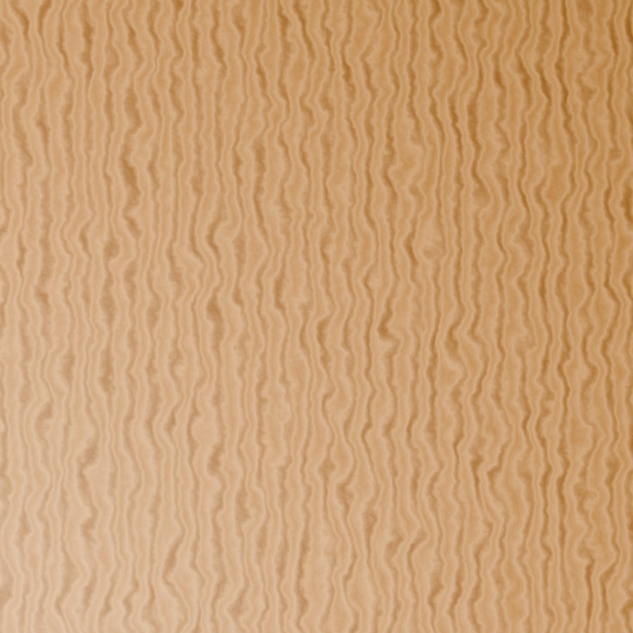
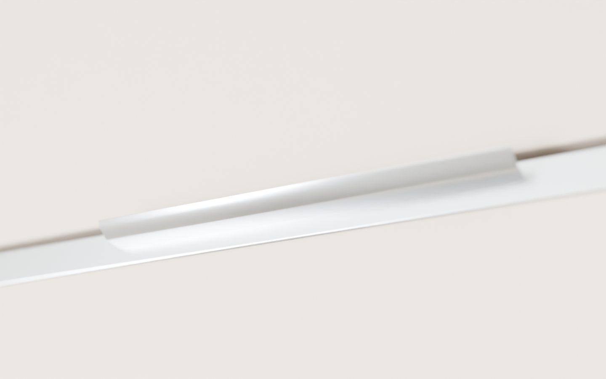
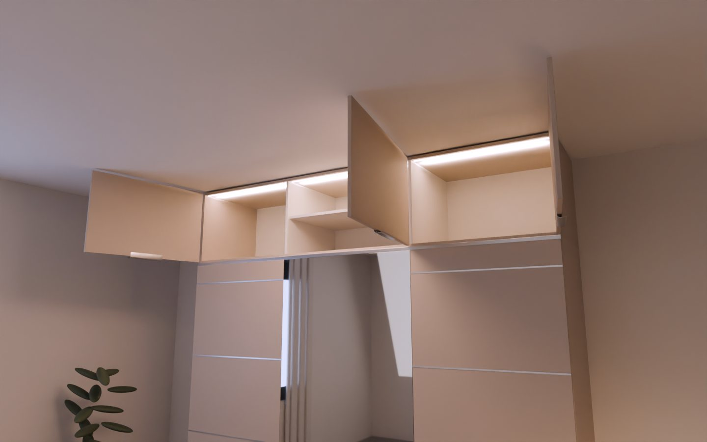
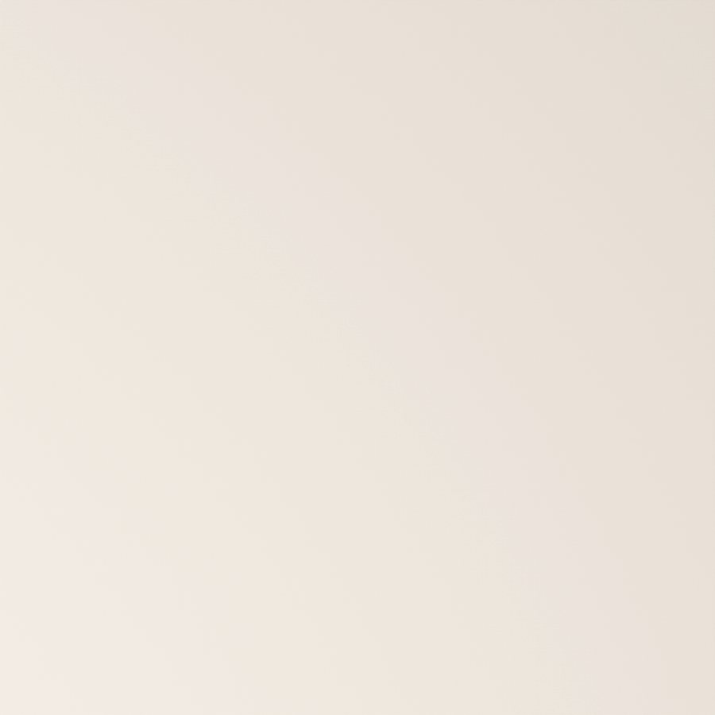
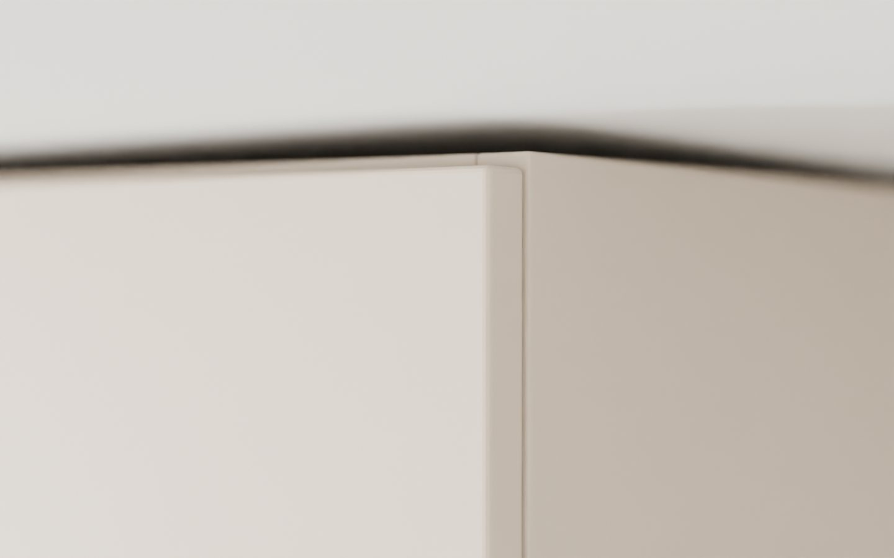

ZENIT/Kollekció/Anyagok és színek
Kollekció · 02
Amit érintesz, annak súlya van.
Fa alapú lapanyag kurált színekben és textúrákban – vagy a ZENIT Natúr valódi tölgy- és diófurnérja.

ZENIT Natúr
Valódi tölgyfurnér – minden ajtó erezete egyedi.

Kézbe simuló
Lekerekített, eloxált alumínium élfogantyú.

Csendes zárás
Häfele fékes pántok, ajtónként.

Len és kő
Különleges textúrák a merész belsőkhöz.

Precíz élek
Gépi élzárás, 2 mm az ajtókon.
Uni paletta
Nyolc szín, végtelen árnyalat.
Matt, selyemfényű vagy magasfényű felülettel – és ha a tiéd nincs köztük, add meg a pontos HEX kódját.
Kréta#F1EFEA
Kasmír#CDBFAE
Homok#D8CBB3
Zsálya#A4AD98
Agyag#A7735A
Grafit#4A4846
Éjkék#273445
Fekete#1B1A19
Textúrák
Fa, kő, len.
A ZENIT Natúr valódi furnért kap: minden ajtó erezete egyedi. A kő- és lenfelületek a merészebb belsőkhöz.
Natúr tölgyZENIT Natúr
Füstölt tölgyZENIT Natúr
DióZENIT Natúr
BetonKő és len
LenKő és len
Fogantyúk
A részlet, amit minden nap megérintesz.
ÉlfogantyúLekerekített, az ajtó alsó élén, hátulról rögzítve. 192 vagy 320 mm.
RúdVékony, hosszú vonal – a modern klasszikus.
Gomb / bőrfülDiszkrét, kézműves részlet.
Nyomásra nyílóFogantyú nélkül, tiszta front.
Minden fogantyú elérhető eloxált alumínium, matt fekete, szálcsiszolt bronz vagy bőr kivitelben.